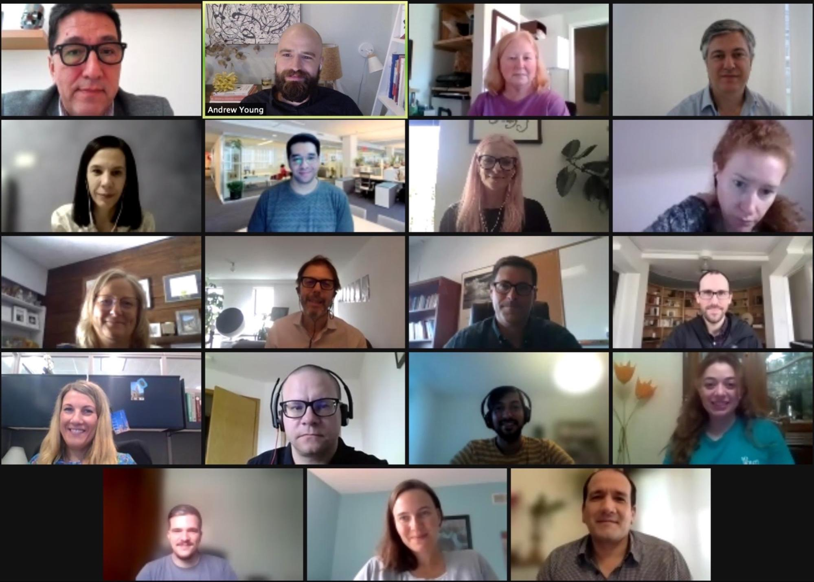

Empowering leaders to develop a data re-use strategy for solving public problems

The biggest opportunities and challenges of the data age lies not only in preventing misuse of data, but also
in facilitating its re-use for the public interest. Data collaboration is hard, developing ethical processes and
standards for data use is imperative, and human adoption of data-driven practices is slow-moving. Indispensable
in addressing all these challenges: data stewards.
Are you searching for ways to access data to drive impact? Or do you manage data that you believe could be
more powerful if shared?
The GovLab and Microsoft, as a part of the Open Data Policy Lab, offer a variety of courses as a part of the Data
Stewards Academy. Course participants come from diverse industries across the private, public, nonprofit and
academic sectors and from geographic regions around the world.
The Executive Education Course is an eight-week course for leaders in their field to learn, network and receive
coaching to develop a data re-use strategy. The course is free, and participants are selected based on the
strength of their applications and qualifications. This is a competitive opportunity for a limited 20 slots
available in each course offering.
At the end of the experience, all course graduates will be invited to join the Data Stewards Academy’s community
of alumni via the Data Stewards Society, an exclusive and esteemed network of data stewards around the world. The
Open Data Policy Lab provides opportunities for networking, discussion on emerging trends and guest speakers for
alumni to engage on a monthly basis.
All courses are virtual, held in English and gather twice a week for two and a half hours at a time on Tuesdays
and Thursdays between the hours of 9am-12pm in the Eastern Time Zone unless otherwise specified.
The Data Stewards Academy typically offers a few courses per year. The best way to stay informed about courses and
application opportunities is to join the Data Stewards Network newsletter by signing up here:
Applications are currently open for a Data Stewards Academy Executive Education course focused on data re-use in
cities. We are looking for applicants who work in the private, public, nonprofit and academic sectors interested
in or actively working on data re-use in cities. Applications are due by April 5 at 11:59pm EST. Submit your
application here!
The course will run from April 24 through June 23, with a one-week break. Selected applicants will be notified by
April 17, 2023.
Program Learning Goals
Empower you to solve public problems through systemic, sustainable, and responsible data reuse
Provide you with a powerful toolkit to draft a data reuse strategy that seeks to address public needs
Introduce the latest tools and technologies for use in designing, implementing and managing policies and
services
Enable you to pursue more purposeful, demand-driven partnerships and collaborations with a broad and
inter-sectoral group of actors
Guide you on the best ways to mitigate risks and promote responsible data practices
Ensure you can translate data into insights and insights into meaningful action
Program Outline
As we enter the third wave of
open data, in which data use and re-use builds off of the foundation set by
existing transparency initiatives and open data, it is more important than ever to find new ways to connect the
demand for data with its supply to meet institutional objectives in a strategic and purposeful way.
The Data Stewards Academy Executive Education course will help data stewards—responsible data leaders in the
public, private sector, nonprofit or academic sector—develop a data re-use strategy to solve public problems.
Noting the ways data resources can inform their day-to-day and strategic decision-making, we teach participants
ways they can use data to improve how they operate and pursue goals in the public’s interests. By working
differently—using agile methods and data analytics–data stewards can further open data and reduce data access
inequities in ways that advance their institution’s goals.
When learning how to innovate in a large institution, it helps to learn and connect with those who have done it
before. As part of this course, participants will have the opportunity to participate in virtual field visits at
leading global organizations to learn from their approach to data re-use. Previous cohorts had the chance to learn
from teams at Microsoft, Mastercard, DIGI Taiwan, Meta and LinkedIn to name a few.
The learning modules are as follows:
In this introductory session, we review the evolution of data and data re-use, looking at how data has been
used to solve public problems. Through the framework of the three waves of open data, participants will learn
about how views of data use and re-use have changed over time, the impact data re-use has made, and major
challenges facing the field.
Following a discussion of the history of the open data movement, we will discuss current approaches to data
re-use around the world. We will then shift to the failures of current approaches and the need of current
approaches and the need to shift from ad hoc engagements to more systematic, sustainable, and responsible
models. We will introduce the role of a data steward, and how they can promote the responsible, systematic and
sustainable re-use of data.
After providing the conceptual framework for discussion, we will discuss the first step in a data re-use
project: understanding the problem an organization intends to solve and for whom; and how that translates into
questions data can answer. Participants will learn approaches for quickly researching complex problems,
assessing public interest in identified problems, and segmenting these potential stakeholders according to
interests and needs. Using experiences from The GovLab’s 100 Questions Initiative, this session will also
describe participatory problem definition, topic mapping and how to formulate effective research questions.
Data re-use requires both relevant data resources and technical capacity. This session will teach
participants how to assess both. In the first part of the session, we will explain how participants can find
useful data in their organization and outside it. Participants will learn how to conduct data audits, map the
location of relevant assets among partner organizations (e.g. companies, nonprofits, and academia), and make
use of open data platforms. In the latter part of the session, participants will learn the value of internal
capacity reviews and receive recommendations on how they can build internal support for data projects. These
explanations will be informed by real-world examples.
Before we bring demand and supply together, it can be helpful to understand the value proposition behind data
sharing. This session includes information on the societal and business cases underlying data re-use, as well
as the latent risks that exist in the data lifecycle. We will explore tools that can help you measure the
costs and benefits of your data re-use project, as well as methods to avoid misusing data. We will also
briefly look at the environmental footprint and other externalities of data initiatives.
Building off of our previous sessions focused on demand and supply, we look at how to bring the two sides
together. This session will introduce you to different models of data collaboration and how to identify a
fit-for-purpose collaborative model for your project. We will also look at the technical aspects of governing
a data collaborative, including existing governance frameworks and the role of data-sharing agreements, as
well as the technological infrastructure needed to build a sustainable collaborative.
Once you’ve established your data collaborative, it is important to understand its impact on the challenge
you initially sought to address and the ecosystem as a whole. This session looks at the use of logic models to
measure impact. For a data steward, impact measurement can play a big role in ensuring the sustainability of
your project in the form of investment and organizational buy-in.
Data re-use projects can address public problems but their potential is best realized when they can be
maintained in the long term. As such, organizations need to make changes in how they operate, ensuring they
are positioned to take advantage of future cross-sector data collaborations. In this session, we will
demonstrate that systematic, sustainable, and responsible data re-use can be best realized through the
creation of a data steward position within an organization. The session will discuss how this role can
coordinate efforts investigating where relevant data is, who has it, who needs it, and how it can best be used
to tackle the problem. It will also discuss the role of the data steward in assessing human infrastructure,
telling organizations what their gaps are and who they need to collaborate with and the priority they should
assign to these relationships.
Course Details
The Executive Education course will be taught in an interactive, online group setting. The GovLab team is
committed to making adjustments to meet the needs of course participants within reason. Details about the course
can be found below and in the FAQs
Time Commitment: This course consists of two and a half hour classes on Tuesdays and Thursdays
(five
hours per week) over the course of eight weeks. There is a scheduled one week break after Week 4 for a total
nine week span for the program. All participants are expected to be active participants in the course to
support peer learning and maximize the experience with guest faculty and virtual site visits.
Timing: Courses will take place between 9am-12pm in the Eastern Time Zone unless otherwise
specified.
Synchronous vs Asynchronous: All courses take place live and course participants are expected to be
able to attend all live courses. Optional readings and mandatory assignments and assignment coaching will
take
place asynchronously.
Assignments: Assignments will be shared weekly and are meant to further course participants’
progress
in the development of their data re-use strategy. Assignments are not expected to take more than one hour
weekly to complete.
Software Logistics: Courses will all take place over Zoom, documents and resources will be shared
as
PDFs or Google Documents and course collaboration will take place over Slack.
Language: The course and all affiliated programming take place in English; course participants are
expected to speak and write in English and have proficiency enough to participate in the courses and engage
with peers.
All sessions are taught by Open Data Policy Lab staff with both academic and real world
experience.
“This course was an incredible opportunity to learn from experienced peers, receive mentorship from academic
and industry experts, and set strategy for a post-pandemic world, where public institutions need to set
priorities with data and answer questions with data.”
-- Christine Keung, Chief Data Officer, Mayor’s Office on Technology and Innovation,
City of San Jose
Application Process and Costs
Applications are currently open for a Data Stewards Academy Executive Education course focused on data
re-use in cities! Applications are due by April 5 at 11:59pm EST. Submit your application here! Selected
applicants will be notified by April 17, 2023. The course will run from April 24 to June 23 with a one week
break.
Criteria for Participation:
Applicants must apply and participate in the course in a professional capacity;
Participation is at the individual level (not for teams);
Applicants must be working professionals holding a managerial or other senior role;
Course participants must be prepared to submit assignments for review, as such assignments are necessary
to develop a data collaboration and reuse strategy during the course;
Individuals must have capacity to attend all sessions in the 8-week course; courses take place virtually
between 9am–12pm Eastern Time Zone Tuesdays and Thursdays; and
The course and all affiliated programming take place in English; course participants are expected to
speak and write in English and have proficiency enough to participate in the courses and engage with
peers.
Application Process:
The Data Stewards Academy currently offers a few Data Stewards Academy Course offerings per year. The best
way to stay informed about course application opportunities is to sign-up for our Data Stewards Network
newsletter.
The application form asks for the following information:
Resume
Letter of Support from a representative in your organization
Name
Email address
Organization Affiliation
Title
Country & Timezone
How does your current position and mandate relate to this course?
Tell us what you can about the data re-use strategy you are looking to develop over the course of the
executive program; we recognize this may only be an idea at this time but welcome any thoughts and details
you can provide.
How does your current work relate to work either in the city in which you reside or another city
(cities)? 300 word limit
Course Cost:
This is a free course thanks to the Open Data Policy Lab’s support by Microsoft. While the program is free,
we do limit the course participation to a maximum of twenty participants to maintain a high-quality
experience for everyone involved and to foster intimate peer to peer learning via discussion.
“I highly recommend the Data Stewardship Executive Education course. The lectures, the speakers and the visits
to
different Data Offices were exceptionally well curated. It is also a great opportunity for networking and
discussing with peer about problems and challenges that all Data Stewards face in our daily work.”
-- Juliana Outes Velarde, Data Steward, Government Outcomes Lab (GO Lab), Oxford
University
Guest Faculty
Data Stewards Academy guest faculty are experts in their fields and based in organizations around
the world. Depending on the thematic focus of a Data Stewards Academy course, different guest faculty will be
asked to present and speak with course participants. If you are interested in being considered as guest
faculty for a future course, please contact datastewards@thegovlab.org
“As the saying goes, ‘In a world befogged by superficiality, moments of clarity are few and far between.’ The
executive data stewardship course by GovLab offers that rare and special light bulb moment. The organization of
the course was excellent and choice of facilitators exceptional. In just a few weeks, we gained knowledge and
practical skills and a deeper meaning and understanding of what data stewardship is and learnt how as leaders we
can develop data re-use strategies to solve public problems.”
-- Eva Muluve, Research Fellow, Population Council —Kenya
Partnerships
The Data Stewards Academy has run a variety of different courses to date, ranging from the Executive
Education course for different global hemispheres to ensure relevant cultural and regional emphasis, to a City
Incubator program focused on data stewards in municipal governments. The Data Stewards Academy has also
partnered with organizations to tailor courses for specific communities, employees and networks. If you are
interested in exploring a bespoke Data Stewards Academy course for your community please contact
datastewards@thegovlab.org.
Current and prior partners for Data Stewards Academy courses include: